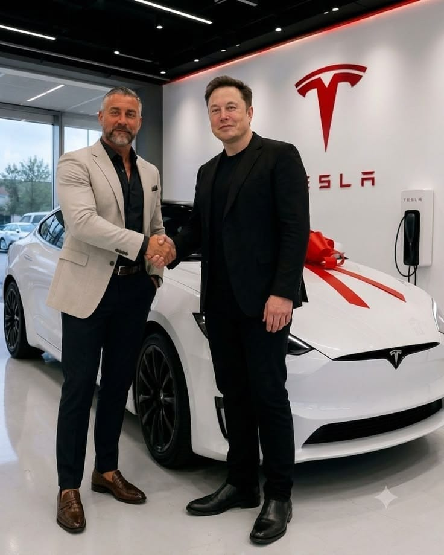

Notre gamme

Les modèles ELON MUSK
Elon Musk a plusieurs projets, tous tournent autour dela même idée : technologie pour résoudre des gros problèmes. Voici les principaux,
et en quoi ils sont présentés comme utiles :
01TESLA
accélérer la transition vers l'énergie durable pour lutter contre
le réchauffement.
02Starlink (SpaceX)
donner internet haut débit partout, même dans les zones rurales
où il n'y a pas de fibre.
03Neuralink
aider des personnes paralysées à contrôler un ordinateur /
téléphone par la pensée, redonner la vue, traiter des maladies
neurologiques .